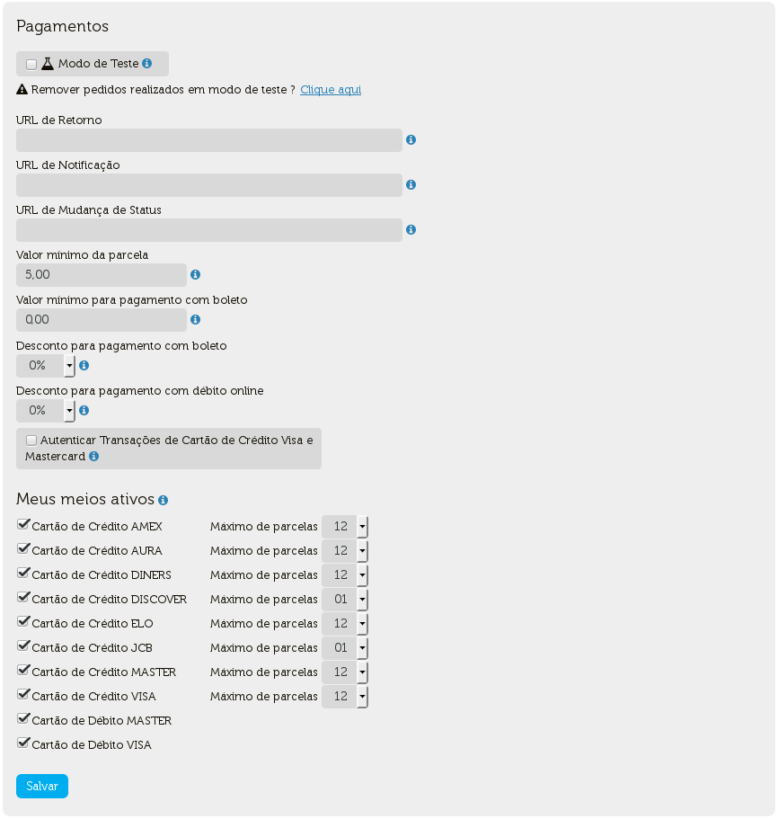

O Checkout Cielo utiliza uma tecnologia REST que deve ser usada quando houver um “carrinho de compras” a ser enviado, ou seja, no caso do consumidor navegar pelo site e escolher 1 ou mais produtos para adicionar ao carrinho e depois, então, finalizar a compra. Há também opção de integração via botão usada sempre que não houver um “carrinho de compras” em sua loja ou quando se deseja associar uma compra rápida direta a um produto.
Durante a integração com o Checkout Cielo, alguns passos e alguns redirecionamentos ocorrerão. A imagem abaixo ilustra esse fluxo:

Após o cliente escolher seu(s) produto(s), ele entrará no fluxo de finalização da compra.
A loja configura três URLs em seu Backoffice:

A URL de Retorno é a que a Cielo utilizará para redirecionar o cliente de volta para a loja assim que o pagamento for concluído. Essa página da loja deverá estar preparada para receber o cliente ao fim do fluxo e avisá-lo que o processo foi concluído e que ele receberá mais informações em breve.
A URL de Notificação é a que a Cielo utilizará para enviar os dados da transação, do carrinho e da autorização ao fim do fluxo de integração. Ao receber a notificação, a loja terá todas as informações sobre o carrinho, pedido e poderá utilizar essas informações para alimentar seu sistema.
| Parâmetro | Descrição | Tipo do campo | Tamanho mínimo | Tamanho máximo |
|---|---|---|---|---|
| checkout_cielo_order_number | Identificador único gerado pelo CHECKOUT CIELO | Alfanumérico | 1 | 32 |
| amount | Preço unitário do produto, em centavos (ex: R$ 1,00 = 100) | Numérico | 1 | 10 |
| order_number | Número do pedido enviado pela loja | Alfanumérico | 1 | 32 |
| created_date | Data da criação do pedido (dd/MM/yyyy HH:mm:ss) | Alfanumérico | 1 | 20 |
| customer_name | Nome do consumidor. Se enviado, esse valor já vem preenchido na tela do CHECKOUT CIELO | Alfanumérico | 1 | 289 |
| customer_identity | Identificação do consumidor (CPF ou CNPJ) Se enviado, esse valor já vem preenchido na tela do CHECKOUT CIELO | Alfanumérico | 1 | 14 |
| customer_email | E-mail do consumidor. Se enviado, esse valor já vem preenchido na tela do CHECKOUT CIELO | Alfanumérico | 1 | 64 |
| customer_phone | Telefone do consumidor. Se enviado, esse valor já vem preenchido na tela do CHECKOUT CIELO | Numérico | 1 | 11 |
| discount_amount | Valor do desconto fornecido (enviado somente se houver desconto) | Numérico | 1 | 10 |
| shipping_type | Modalidade de frete | Numérico | 1 | 1 |
| shipping_name | Nome do frete | Alfanumérico | 1 | 128 |
| shipping_price | Valor do serviço de frete, em centavos (ex: R$ 10,00 = 1000) | Numérico | 1 | 10 |
| shipping_address_zipcode | CEP do endereço de entrega | Numérico | 1 | 8 |
| shipping_address_district | Bairro do endereço de entrega | Texto | 1 | 64 |
| shipping_address_city | Cidade do endereço de entrega | Alfanumérico | 1 | 64 |
| shipping_address_state | Estado de endereço de entrega | Alfanumérico | 1 | 64 |
| shipping_address_line1 | Endereço de entrega | Alfanumérico | 1 | 256 |
| shipping_address_line2 | Complemento do endereço de entrega | Alfanumérico | 1 | 256 |
| shipping_address_number | Número do endereço de entrega | Numérico | 1 | 8 |
| payment_method_type | Cód. do tipo de meio de pagamento | Numérico | 1 | 1 |
| payment_method_brand | Bandeira (somente para transações com meio de pagamento cartão de crédito) | Numérico | 1 | 1 |
| payment_method_bank | Banco emissor (Para transações de Boleto e Débito Automático) | Numérico | 1 | |
| payment_maskedcredicard | Cartão Mascarado (Somente para transações com meio de pagamento cartão de crédito) | Alfanumérico | 1 | 20 |
| payment_installments | Número de parcelas | Numérico | 1 | 1 |
| payment_antifrauderesult | Status das transações de cartão de Crédito no Antifraude | Numérico | 1 | |
| payment_boletonumber | Numero do boleto gerado | String | ||
| payment_boletoexpirationdate | Data de vencimento para transações realizadas com boleto bancário | Numérico | 1 | 10 |
| payment_status | Status da transação | Numérico | 1 | 1 |
| tid | TID Cielo gerado no momento da autorização da transação | Alfanumérico | 1 | 32 |
<status>OK</status><status>OK</status> ainda não seja exibido, será entendido que o servidor da loja não responde.A URL de Mudança de Status é a que a Cielo utilizará para notificar a loja sobre as mudanças de status das transações. Uma mudança de status, de Autorizado para Cancelado, por exemplo, pode ocorrer a qualquer momento. Se o administrador da loja cancelar um pedido no Backoffice Cielo, então a Cielo enviará para a URL de Mudança de Status uma notificação semelhante a enviada para a URL de notificação. A única diferença dessa notificação é que não conterá os dados do carrinho, mas apenas do pedido e o novo status da autorização.
| Parâmetro | Descrição | Tipo do campo | Tamanho mínimo | Tamanho máximo |
|---|---|---|---|---|
| checkout_cielo_order_number | Identificador único gerado pelo CHECKOUT CIELO. | Alfanumérico | 1 | 32 |
| amount | Preço unitário do produto, em centavos (ex: R$ 1,00 = 100) | Numérico | 1 | 10 |
| order_number | Número do pedido enviado pela loja | Alfanumérico | 1 | 32 |
| payment_status | Status da transação | Numérico | 1 | 1 |
<status>OK</status><status>OK</status> ainda não seja exibido, será entendido que o servidor da loja não responde, e será enviado um e-mail ao responsável pela loja, informando que o pedido em questão foi pago.<status>OK</status> e nada mais.